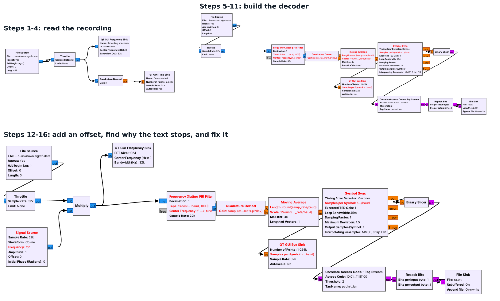
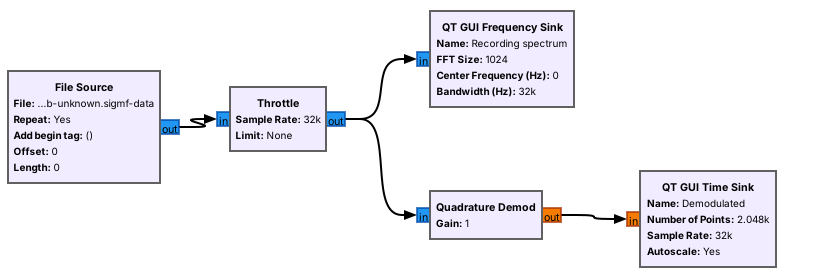
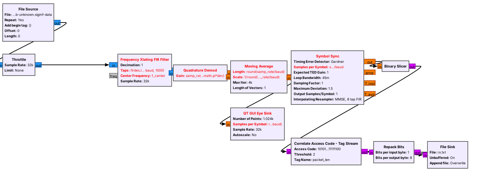
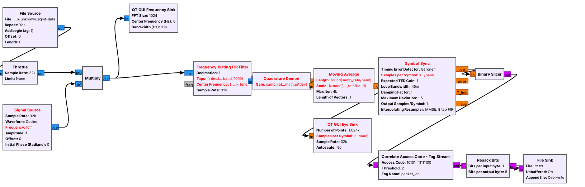

L8 Lab — FSK#
FSK
Decode an FSK recording whose tones and baud you find yourself, then find out why a frequency offset stops your decoder and fix it.
L8 Lab · Module 4: Digital Modulation · Dr. Neil Rogers
Learning Objectives
- I can describe FSK modulation and implement an FSK transmitter and receiver in GNU Radio.
The Big Picture

Steps 1 to 4 play L08-lab-unknown.sigmf-data, a recording from a transmitter like the one you built in class, with its own baud rate and tones, and read those off a spectrum and a demodulator. Steps 5 to 11 build a decoder from Lesson 8’s blocks with those settings and recover the recording’s message into a file. Steps 12 to 16 shift the recording by a frequency offset your flowgraph draws at random and does not show, as a second radio’s oscillator would; you find out from the spectrum and the eye why the text stops, and retune your receiver to bring it back. Your Part 1 predictions go with Steps 15 and 16, what you work out goes in Tables A and B of the packet, and the screenshots go in Figures 1 to 4. Nothing in this lab transmits.
Predict First
Choose a deviation and a frequency offset. The dashed blue lines are the eye’s two levels with no offset. Before you press Show the eye, set the My Prediction slider to where you think the lower level will sit. Changing either setting or your guess hides the answer again, so each guess comes first. The widget leaves out the receive filter and keeps every offset at or below half the deviation, where the text still arrives; Step 12’s offset is larger, and the flowgraph hides its value.
Read the Recording
Play
L08-lab-unknown.sigmf-datainto a spectrum and a demodulator.Read its two tone frequencies and its symbol rate.
Set
f_center,dev, andbaudfrom them.

The recording comes from a transmitter like the one you built in class, with the same packets, but with a baud rate and tone frequencies of its own. Your job is to recover its message.
Read the meta file. Put
L08-lab-unknown.sigmf-dataandL08-lab-unknown.sigmf-metafrom the Lab Packet frame in one folder, open the.sigmf-metain a text editor, and notecore:sample_rate. The samples are complex float, the type GNU Radio calls complex.Find the tones. In GRC choose File, New, QT GUI, and save the flowgraph as
L08-lab-decoder.grcin that folder. Setsamp_rateto the sample rate, and add a complex File Source on the.sigmf-datawith Repeat set to Yes, a complex Throttle atsamp_rate, and a complex QT GUI Frequency Sink with bandwidthsamp_rate. Run it and read the frequencies of the two tones; the two tracks need not sit evenly about 0.Find the symbol rate. Add a Quadrature Demod with gain 1 on the Throttle’s output and a float QT GUI Time Sink on its output, with 2048 points at
samp_rate. The output jumps between two levels; zoom in with the mouse until you can read the shortest stay at one level, which is one bit, and take the symbol rate as one over its length, as Lesson 8’s “FSK on a Real Radio” does.Name the settings. Add three Variables:
f_center, the midpoint of the two tones;dev, half their spacing; andbaud, the symbol rate. Every decoder setting below comes from these three, so a mistake here shows up everywhere downstream.
Build the Decoder
Shift the midpoint to 0 and filter: a Frequency Xlating FIR Filter.
Then Lesson 8’s receiver, with your three Variables in every setting.
Recover the message; screenshot the canvas and the text.

Shift and filter. Disable the Quadrature Demod and the Time Sink from Step 3, and on the Throttle’s output add a Frequency Xlating FIR Filter, the block Lesson 7’s receiver used, with decimation 1, center frequency
f_center, and tapsfirdes.low_pass(1, samp_rate, dev + baud, 1000). It moves the midpoint of the two tones to 0 and keeps the band Lesson 8’s receive filter keeps.Demodulate. Add a Quadrature Demod whose gain turns a tone at
+devinto an output of 1, written in terms ofsamp_rateanddev, as in Lesson 8’s “The Quadrature Demodulator”.Smooth each bit. One bit lasts
samp_rate/baudsamples, which need not be a whole number. Add a float Moving Average with lengthround(samp_rate/baud)and scale1/round(samp_rate/baud), and put a float QT GUI Eye Sink withround(samp_rate/baud)samples per symbol on its output.Find each bit. Add a float Symbol Sync with the Gardner timing error detector,
samp_rate/baudsamples per symbol, loop bandwidth 0.045, and 1 output sample per symbol, then a Binary Slicer.Find each packet. Add Correlate Access Code - Tag Stream with access code
digital.packet_utils.default_access_code, threshold 2, and tag name"packet_len", then Repack Bits with 1 bit in, 8 bits out, MSB first, and length tag key"packet_len".Write the text. Add a byte File Sink with file
rx.txtand Unbuffered set to On. Every arrow must be black: a red arrow joins two ports of different types, so match that block’s type to its neighbor’s.Recover the message. Run it for about 10 s with the eye in view, stop it, and open
rx.txtin a text editor. Record the message, take one screenshot of your canvas and the running window side by side for Figure 1, and paste a screenshot ofrx.txtas Figure 2. Ifrx.txtis empty, the eye tells you where to look: an eye that never opens points tof_center,dev, or the gain, an eye that smears points tobaud, and an open eye with no text points to the access code, the tag names, or the bit order.
Break It and Fix It
Shift the recording by an offset the flowgraph draws and does not show.
Find out from the spectrum and the eye why the text stops.
Retune your receiver until the message comes back.

Add the offset. Stop the flowgraph. Add an Import block with
import random, and a Variablefoffwith valuerandom.choice([-1, 1])*random.uniform(1.2, 1.6)*dev. Between the Throttle and the Frequency Xlating FIR Filter, add a complex Multiply, and feed its second input from a complex Signal Source with waveform Cosine, frequencyfoff, and amplitude 1. Move the Frequency Sink’s input from the Throttle to the Multiply’s output. The Multiply shifts the whole recording byfoff, as a transmitter whose oscillator is off from yours would. Each run draws a new offset, and nothing on the window shows it.Add a tuning control. Add a QT GUI Range
rx_tunelabeled RX tuning (Hz), from-3*devto3*devin steps of 10, starting at 0, and change the Frequency Xlating FIR Filter’s center frequency tof_center + rx_tune. At 0 it changes nothing.Break it. Run it for about 10 s with RX tuning (Hz) at 0, stop it, and open
rx.txt. Compare it with the message you recovered in Step 11.Find out why. Run it again with RX tuning (Hz) at 0, and leave it running through Step 16, because a restart draws a new offset. Read the two tone frequencies on the spectrum and the eye level nearer zero, and compare both with your Part 1 predictions. The other level may run off the eye or sink into the noise, because its tone can sit past the filter’s cutoff; the level nearer zero is the one to read. Paste a screenshot of the running window, with the spectrum and the eye, as Figure 3.
Fix it. The offset stands for the other radio’s oscillator, which you do not control, so the fix goes in your receiver. Set RX tuning (Hz) from what the spectrum shows, and watch the eye. If the eye moves further from where it sat in Step 11, the sign is backward. Once the eye is back, let it run about 10 s, stop it, and open
rx.txt: the lines written after the fix are the message again. Record the setting, and paste a screenshot of the running window withrx.txtbeside it as Figure 4. Ifrx.txtstays empty, stop the flowgraph, set the value offoffto 0, and run it with RX tuning (Hz) at 0: your decoder should recover the message as it did in Step 11, and if it does not, the fault is in Steps 5 to 10, not in the offset.
No Hardware?
This lab needs no radio
Every flowgraph here runs on your laptop on my recording, and the Signal Source and Multiply of Step 12 stand in for a second radio’s oscillator, so a missing or broken PlutoSDR does not matter today.
Your Part 2 Entries
This frame collects every box you filled in on this page. Your entries stay in this browser only, saved as you type. Download my packet writes them into the Measured cells of the blank packet and saves the PDF. The download locks every field, the Predicted cells included, so type your predictions into your own copy of the packet first, then use Fill my own copy and choose that file: the page keeps your predictions and adds your measurements beside them. Paste Figures 1 to 4 and write Part 3 in your copy, or on the printout, and upload one PDF to Gradescope. Export entries saves a small backup file you can Import on another laptop.
Lab Packet
The L8 Lab packet is one submission, turned in complete before Lesson 9:
Part 1, Predict (individual, before the lab period): the three shaded cells in Table B, with your reasoning attached.
Part 2, Measure (in class, on your own laptop): the white Measured cells of Tables A and B, and Figures 1 to 4.
Part 3, Analyze (individual, after the lab): three prompts, each answered from your own tables and figures.
L08-lab-unknown.sigmf-data and L08-lab-unknown.sigmf-meta, the recording you decode
For Part 3
Do Part 3 after class, with your tables and figures beside you. It asks about three things:
Your decoder on the canvas and its eye in Figure 1, block by block.
Your offset readings and RX tuning in Table B, against Figures 3 and 4.
Your RX tuning, which you set by hand from the spectrum, and a decoder that would not need it.
I grade each answer on a claim, the evidence from your own table and figures, the reasoning that connects them, and the uncertainty in your readings.
Looking Ahead
Lesson 9 sends each bit as the height of a pulse instead of a frequency: PAM.